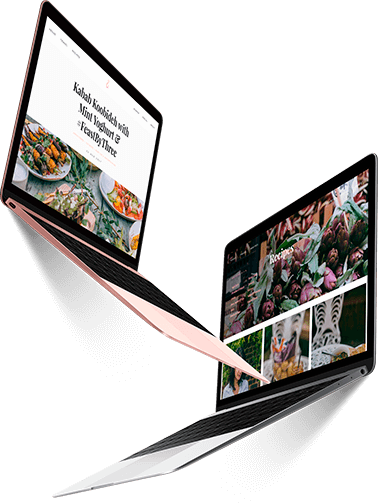

Sobre mi

Mi nombre es Luis Ismael soy programador frontend. Tengo la experiencia en desarrollo de sitios web para pequeñas y medianas empresas y elaboracion de mailing.
Me aseguro de utilizar siempre las últimas tecnologías de desarrollo web: HTML5, CSS3(flexbox,Grid), jQuery una página web moderna, funcional, que se adapte a todos los diferentes tipos de pantalla, te aseguro que llegaste al lugar correcto.
Puedes ponerte en contacto conmigo a través de Facebook, Linkedin o completando el formulario de contacto que se encuentra al final de mi sitio web.
Ver mis trabajos